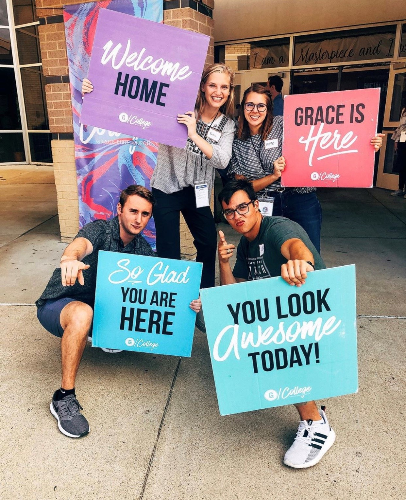

“...let us not love with word or with tongue, but in deed and truth.”
1 John 3:18
It is important to me that service always be an integral part of my life and work. Below are ways I have served my community in my time in college, and also where I hope to serve and give back once I graduate.
Peer Help and Tutoring Program
My freshmen year I was part of a Freshmen Leadership Organization called FREE (Freshmen Reaching Excellence in Engineering)
In that organization, I had mentors who helped me to acclimate to college life, develop good study habits, and who were able to give
advice and encouragement in my academic journey. When I became a sophomore, I wanted to give back to that organization, FREE, by becoming a mentor myself.
The picture above is a group of the freshmen that I mentored in their first year within Engineering.
Grace Bible Church Volunteer
Since my sophomore year, I have volunteered with my church, Grace Bible Church. On Sunday mornings, we helped to efficiently set-up and tear-down for church as well as greeted the students as they came in.
Hope for Future Service: STEM Education

Throughout college, I worked as a tutor for the University where I helped students to gain understanding in their STEM classes such as Calculus, Physics, and Computer Science. I saw that there can such impact in empowering a student to have the necessary tools and knowledge to succeed in whatever they choose to. Once I graduate, I hope to continue mentoring and tutoring students in some way to encourage them in their learning journey. I believe engaging students' curiosity and giving them a drive for learning can truly change the world.